//CRUDEBOX
FROM THIS BOX CRUDE THINGS WILL COME
THE GOAL OF CRUDEBOX WAS TO TRANSLATE THE RAW, TEXTURED AESTHETIC OF WOVEN TAPESTRY
INTO CAMPAIGN ASSETS, DIGITAL CONTENT, AND PROMOTIONAL MATERIALS
 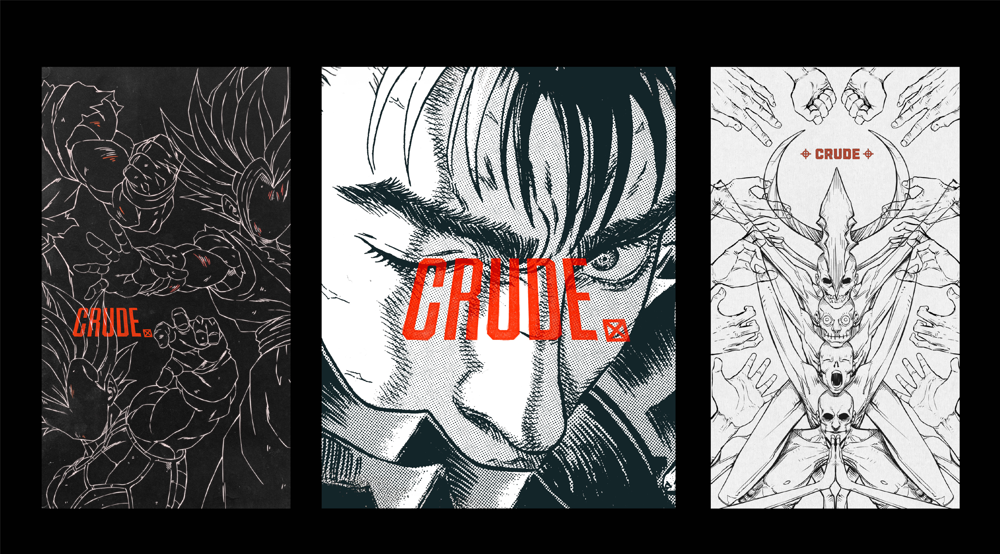
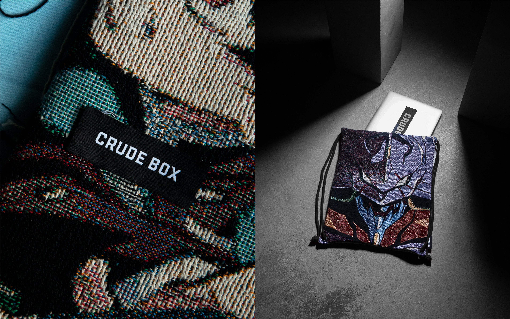
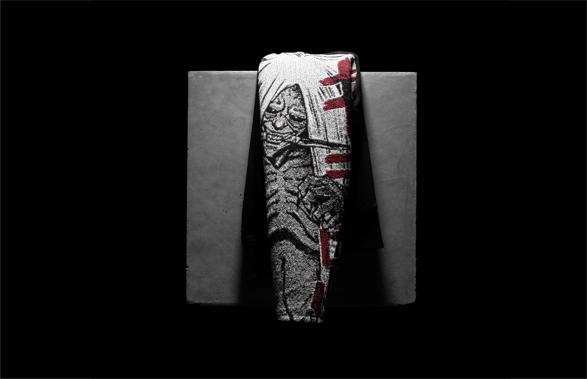
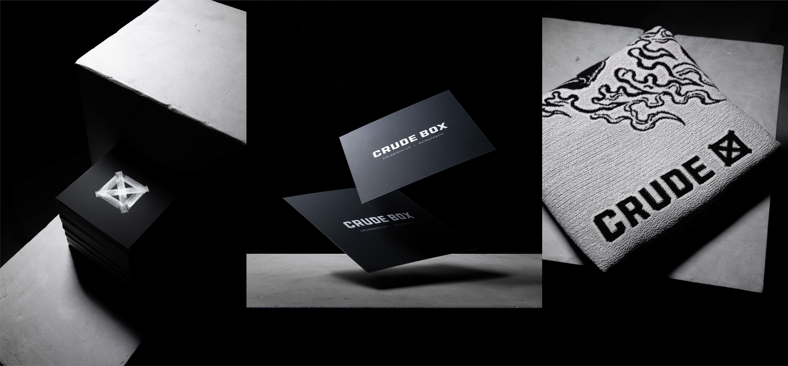
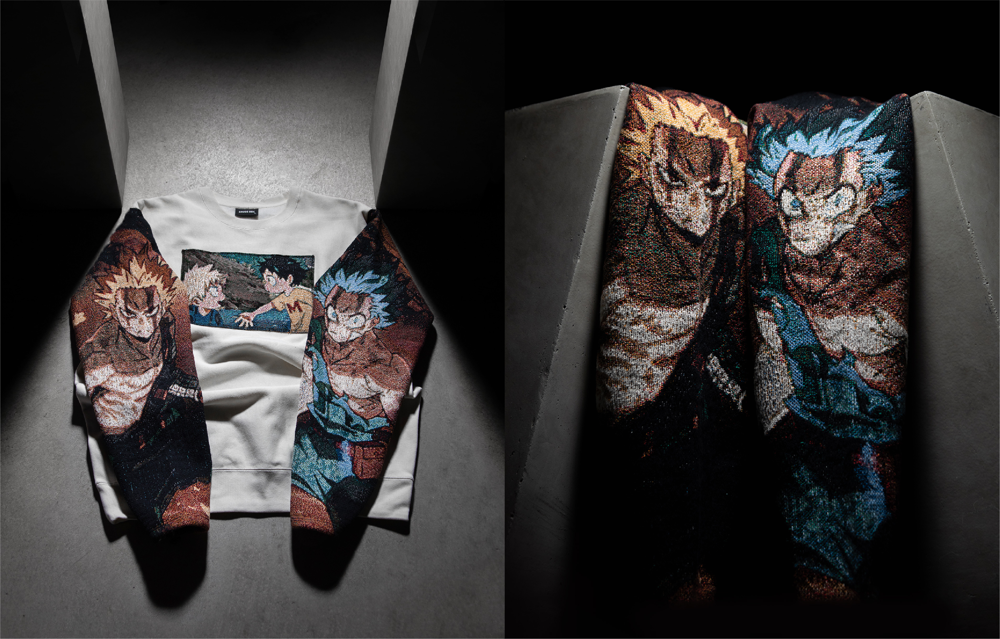
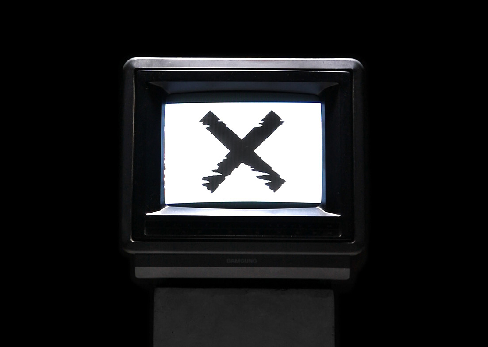
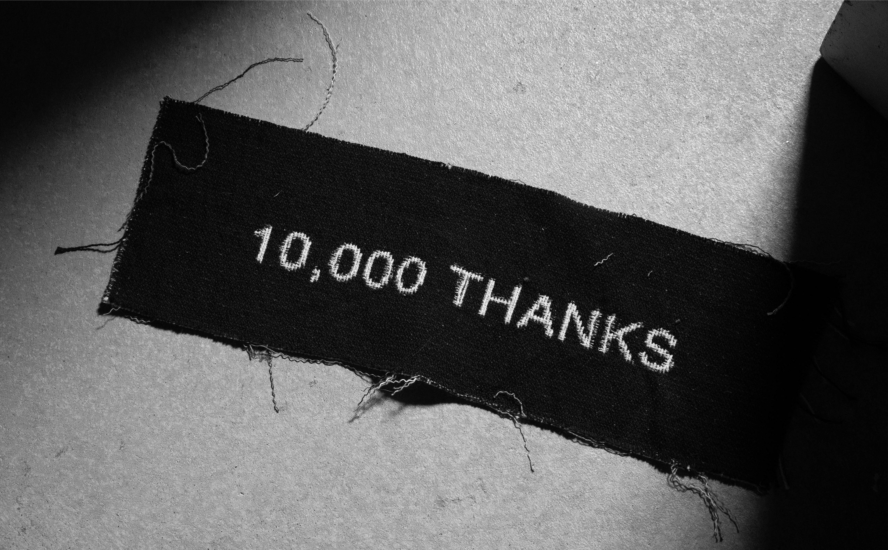
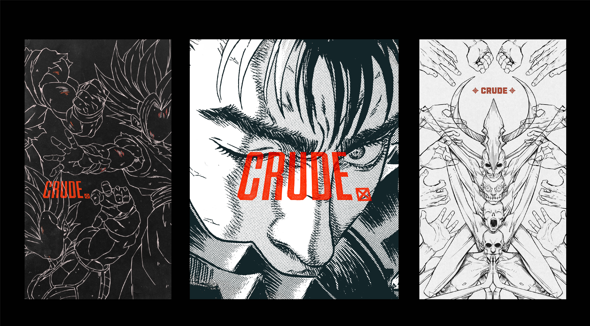
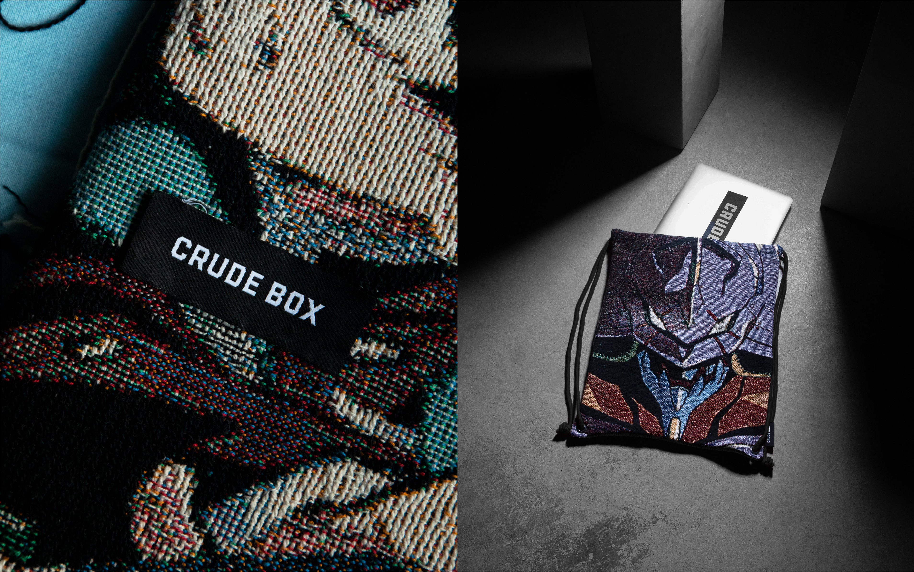
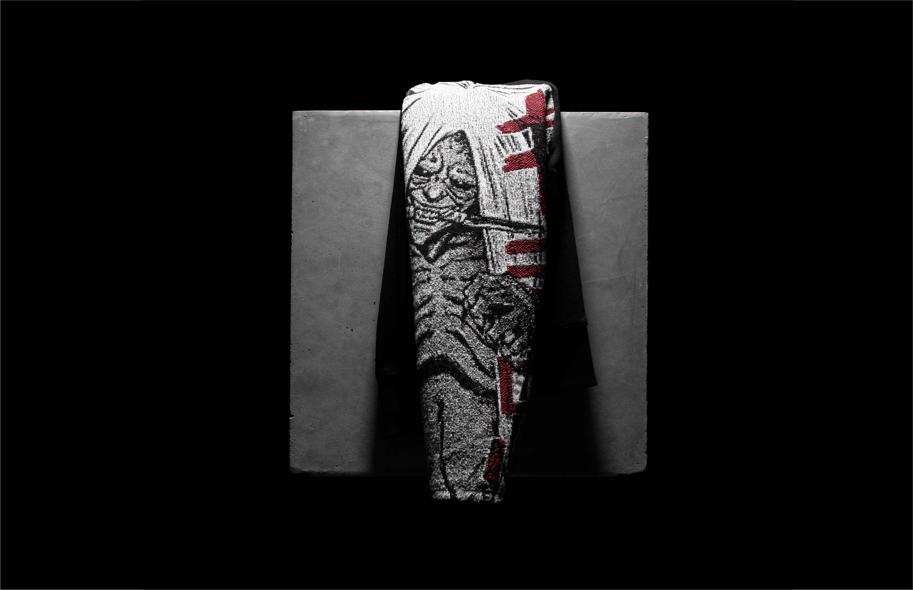
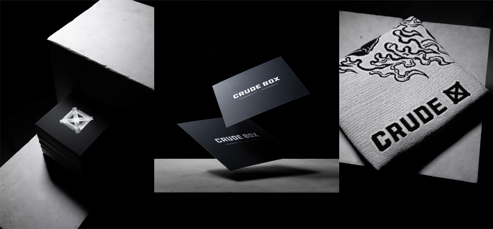
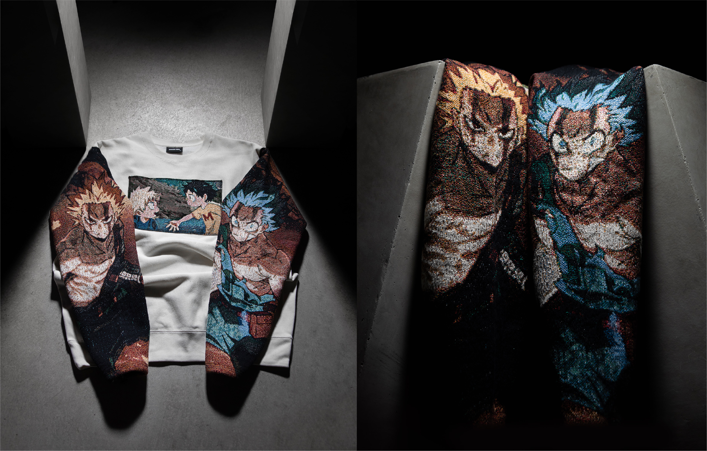
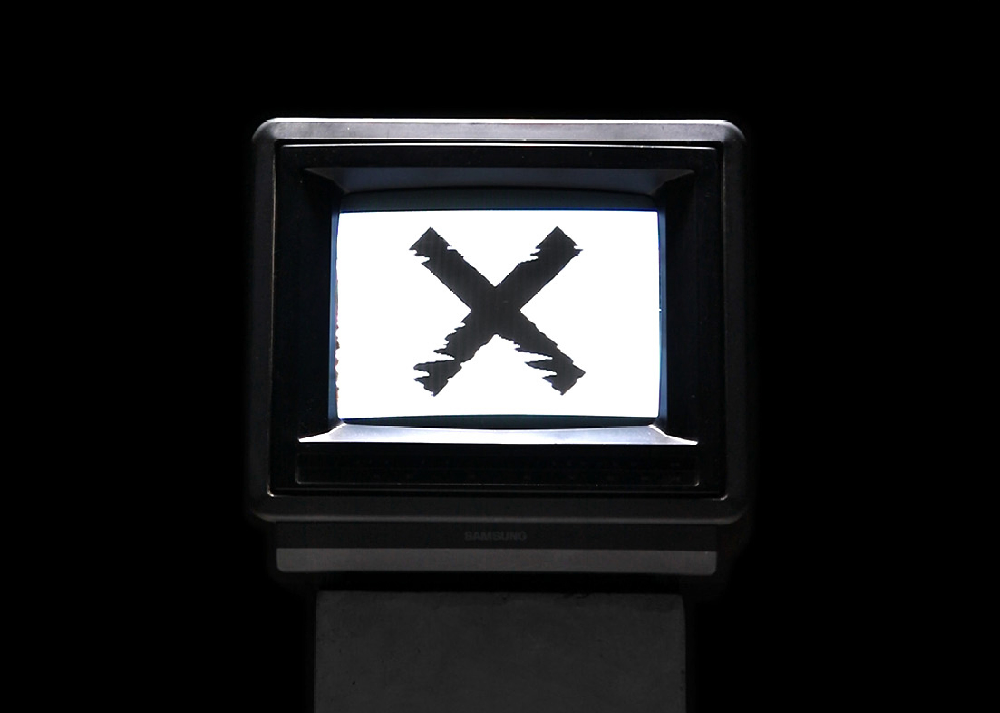
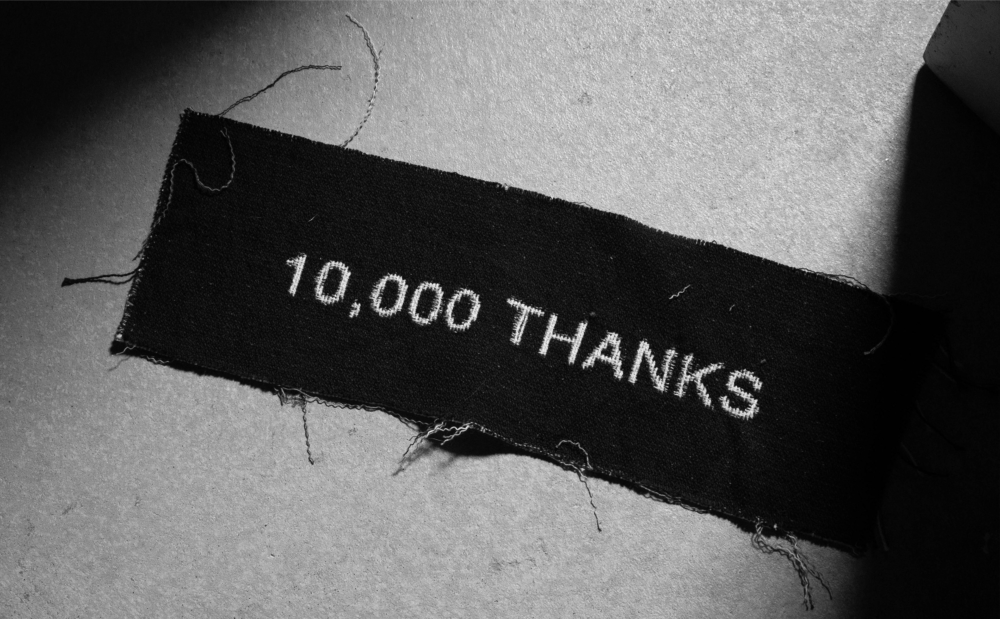